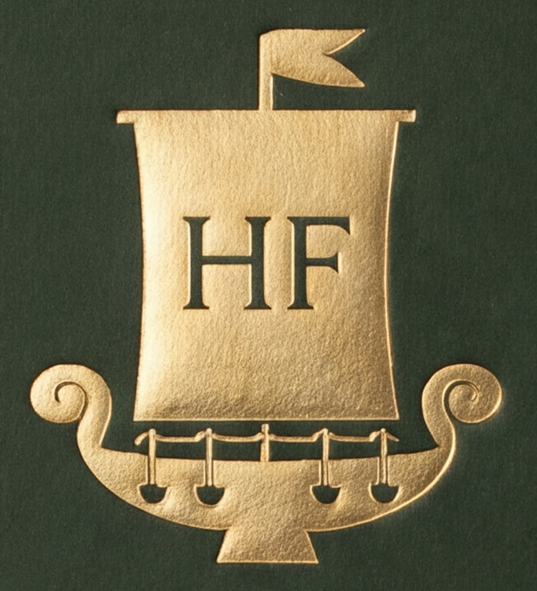
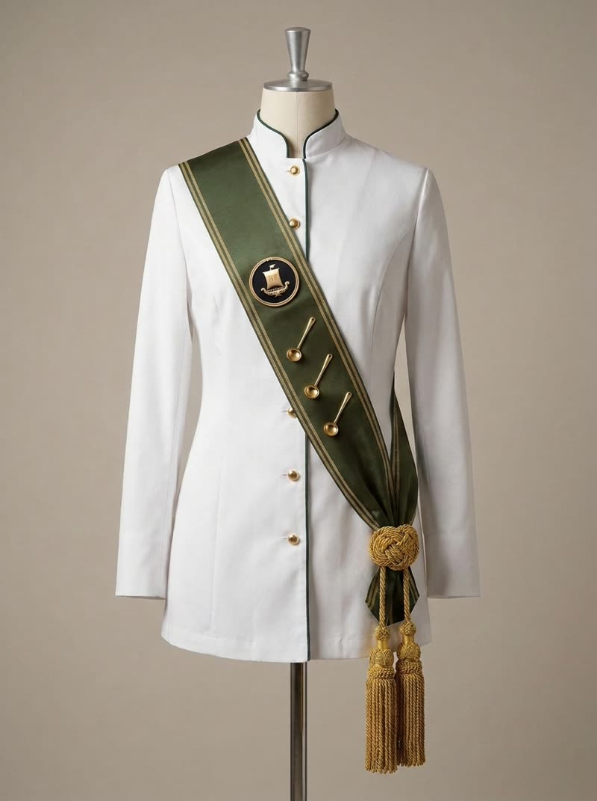
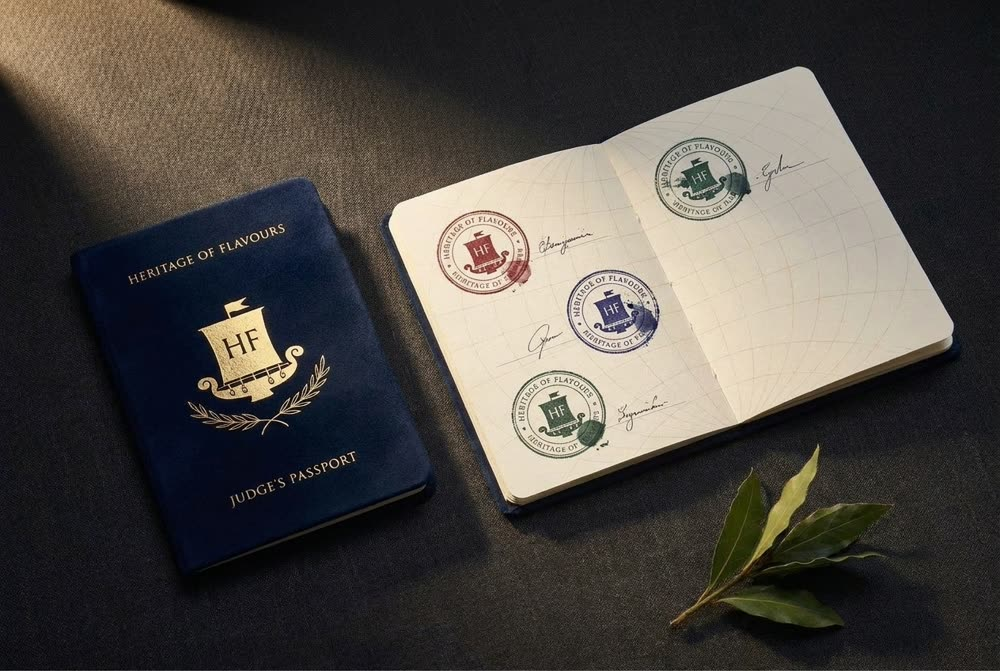
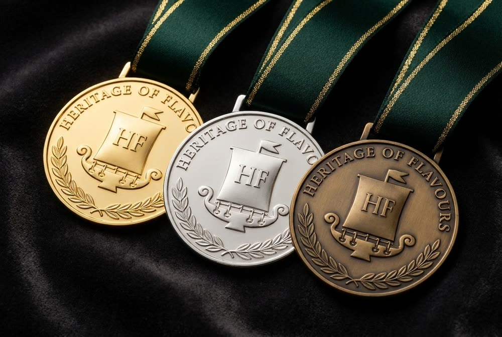
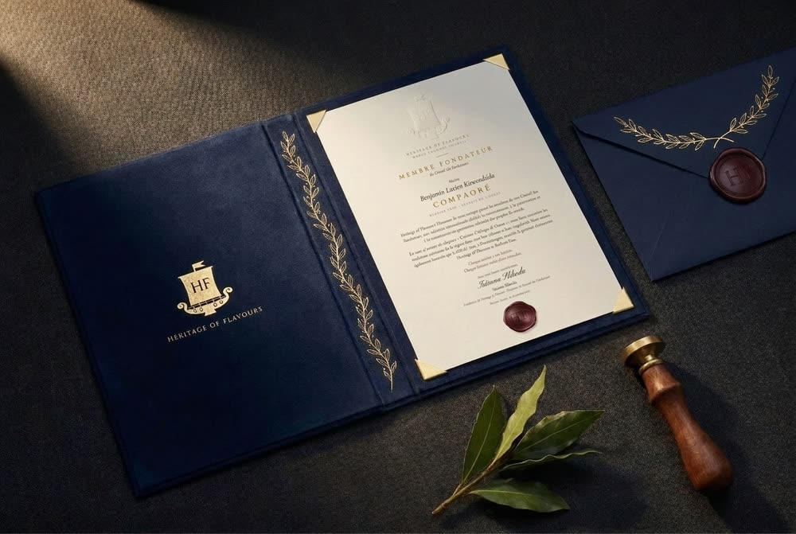

Le Conseil Culinaire Mondial « Héritage des Saveurs ». Un système de jugement dans lequel chaque cuisine est jugée selon sa propre tradition, et non selon les standards d’une autre. Всемирный кулинарный совет «Наследие вкусов». Система судейства, в которой каждую кухню судят по её собственной традиции, а не по стандартам чужой. The World Culinary Council “Heritage of Flavours”. A judging system in which every cuisine is judged by its own tradition, not by the standards of another. El Consejo Culinario Mundial «Herencia de los Sabores». Un sistema de juicio en el que cada cocina se juzga según su propia tradición, y no según los estándares de otra. O Conselho Culinário Mundial «Herança dos Sabores». Um sistema de julgamento em que cada cozinha é julgada pela sua própria tradição, e não pelos padrões de outra. المجلس العالمي للطهي «تراث النكهات». نظام تحكيم يُحكَم فيه على كل مطبخ وفق تقاليده الخاصة، لا وفق معايير مطبخ آخر. 世界烹饪理事会“风味传承”。在这一评审体系中，每一种菜系都依照其自身的传统来评判，而不是以另一种菜系的标准来衡量。
Une seule vidéo, une voix dans chaque langue : changez de langue à tout moment, la lecture continue. Sous-titres dans les sept langues.Одно видео, голос на каждом языке: язык можно сменить в любой момент, просмотр продолжится. Субтитры — на всех семи языках.One video, a voice in each language: switch at any moment and playback continues. Subtitles in all seven languages.Un solo vídeo, una voz en cada idioma: cambie de idioma en cualquier momento y la reproducción continúa. Subtítulos en los siete idiomas.Um só vídeo, uma voz em cada idioma: mude de idioma a qualquer momento e a reprodução continua. Legendas nos sete idiomas.فيديو واحد وصوت بكل لغة: غيّر اللغة في أي لحظة ويستمر العرض. ترجمة نصية بجميع اللغات.一个视频，每种语言都有配音：随时切换语言，播放不会中断。所有语言均配有字幕。
On ne compare pas un plat du Maghreb aux classiques français, ni la pâtisserie russe à la viennoise. Le juge évalue à quel point le plat est fidèle à sa tradition.Блюдо Магриба не сравнивают с французской классикой, а русскую выпечку — с венской. Судья оценивает, насколько блюдо верно своей традиции.A Maghreb dish is not compared to French classics, nor Russian pastry to Viennese. The judge assesses how faithful the dish is to its own tradition.No se compara un plato del Magreb con los clásicos franceses, ni la repostería rusa con la vienesa. El juez evalúa hasta qué punto el plato es fiel a su tradición.Não se compara um prato do Magrebe aos clássicos franceses, nem a pastelaria russa à vienense. O juiz avalia até que ponto o prato é fiel à sua tradição.لا يُقارَن طبق مغاربي بالكلاسيكيات الفرنسية، ولا الحلويات الروسية بالفيينية. يقيّم الحَكَم مدى وفاء الطبق لتقاليده.不会拿马格里布的菜肴去比照法国经典，也不会拿俄罗斯糕点去比照维也纳糕点。评委评判的是这道菜在多大程度上忠于它自己的传统。
La tradition, c’est ce que les gens cuisinent aujourd’hui et reconnaissent comme leur, avec toute son histoire et ses emprunts — et non une reconstitution de musée.Традиция — это то, что люди готовят сегодня и считают своим, со всей её историей и заимствованиями, а не музейная реконструкция.Tradition is what people cook today and recognise as their own, with all its history and borrowings — not a museum reconstruction.La tradición es lo que la gente cocina hoy y reconoce como suyo, con toda su historia y sus préstamos, y no una reconstrucción de museo.A tradição é o que as pessoas cozinham hoje e reconhecem como seu, com toda a sua história e os seus empréstimos — e não uma reconstituição de museu.التقاليد هي ما يطبخه الناس اليوم ويعدّونه ملكًا لهم، بكل تاريخه وما استعاره من غيره، وليست إعادة تمثيل متحفية.传统，是人们今天仍在烹饪、并视为自己所有的东西，连同它全部的历史与借鉴，而不是博物馆里的复原品。
On ne devient pas juge HF par nomination ni contre une cotisation. Le titre s’obtient par la formation, la pratique et l’examen, et il peut être retiré en cas de manquement au Code d’honneur HF.Судьёй HF не становятся по назначению или за взнос. Звание получают через обучение, практику и экзамен, и его можно лишиться за нарушение Кодекса чести HF.No one becomes an HF judge by appointment or by paying a fee. The title is obtained through training, practice and examination, and it can be withdrawn for breaching the HF Code of Honour.Nadie se convierte en juez HF por nombramiento ni pagando una cuota. El título se obtiene con la formación, la práctica y el examen, y puede retirarse por incumplir el Código de honor HF.Ninguém se torna juiz HF por nomeação nem pagando uma quota. O título obtém-se pela formação, pela prática e pelo exame, e pode ser retirado em caso de violação do Código de honra HF.لا يصبح أحد حَكَمًا في HF بالتعيين أو مقابل اشتراك. يُنال اللقب بالتدريب والممارسة والامتحان، ويمكن سحبه عند الإخلال بميثاق الشرف لـ HF.没有人能通过任命或缴费成为 HF 评委。称号须通过培训、实践和考试获得，违反 HF 荣誉准则者可被撤销。
Technique, goût et équilibre, produit, présentation, travail en cuisine, hygiène, temps. Évaluée par tout juge HF formé.Техника, вкус и баланс, продукт, подача, работа на кухне, гигиена, время. Оценивает любой обученный судья HF.Technique, taste and balance, produce, presentation, kitchen work, hygiene, timing. Assessed by any trained HF judge.Técnica, sabor y equilibrio, producto, presentación, trabajo en cocina, higiene, tiempo. La evalúa cualquier juez HF formado.Técnica, sabor e equilíbrio, produto, apresentação, trabalho na cozinha, higiene, tempo. Avaliada por qualquer juiz HF formado.التقنية، والمذاق والتوازن، والمكوّنات، والتقديم، والعمل في المطبخ، والنظافة، والوقت. يقيّمه أي حَكَم مدرَّب في HF.技术、味道与平衡、食材、摆盘、厨房操作、卫生、时间。由任何经过培训的 HF 评委评分。
Les bons produits, le goût et la texture : ce que le plat doit être chez lui. Évaluée avant tout par le Gardien des Traditions, juge habilité pour cette cuisine.Правильные продукты, вкус и текстура — каким блюдо должно быть у себя дома. Оценивает прежде всего Хранитель традиций — судья с допуском по этой кухне.The right produce, taste and texture: what the dish must be at home. Assessed above all by the Keeper of Traditions, a judge accredited for that cuisine.Los productos adecuados, el sabor y la textura: lo que el plato debe ser en su tierra. La evalúa ante todo el Guardián de las Tradiciones, juez habilitado para esa cocina.Os produtos certos, o sabor e a textura: o que o prato deve ser na sua terra. Avaliada sobretudo pelo Guardião das Tradições, juiz habilitado para essa cozinha.المكوّنات الصحيحة والمذاق والقوام: ما يجب أن يكون عليه الطبق في موطنه. يقيّمه أولًا حارس التقاليد، وهو حَكَم معتمَد لهذا المطبخ.正确的食材、味道与口感：这道菜在它的故乡应有的样子。首先由传统守护者评分，即获得该菜系资质的评委。
De même que le méridien sert de point de référence sur une carte, le Codex sert de point de référence au juge dans chaque cuisine. Ce n’est pas un recueil de recettes : il rassemble les lois de chaque cuisine — ce qui y est apprécié, sa logique gustative, ce sans quoi elle cesse d’être elle-même.Как от меридиана ведут отсчёт на карте, так от Кодекса ведёт отсчёт судья в каждой кухне. Это не сборник рецептов, а законы каждой кухни: что в ней ценится, какова её логика вкуса, без чего она перестаёт быть собой.Just as the meridian is the reference point on a map, the Codex is the judge’s reference point in every cuisine. It is not a recipe book: it gathers the laws of each cuisine — what is valued in it, its logic of taste, what it cannot lose without ceasing to be itself.Así como el meridiano es el punto de referencia en un mapa, el Códice es el punto de referencia del juez en cada cocina. No es un recetario: reúne las leyes de cada cocina — lo que en ella se aprecia, su lógica del sabor, aquello sin lo cual deja de ser ella misma.Tal como o meridiano é o ponto de referência num mapa, o Códice é o ponto de referência do juiz em cada cozinha. Não é um livro de receitas: reúne as leis de cada cozinha — o que nela se valoriza, a sua lógica do sabor, aquilo sem o qual deixa de ser ela própria.كما أن خط الزوال هو نقطة المرجع على الخريطة، فإن المدونة هي نقطة مرجع الحَكَم في كل مطبخ. إنها ليست كتاب وصفات، بل تجمع قوانين كل مطبخ: ما يُقدَّر فيه، ومنطق مذاقه، وما يفقد هويته بدونه.正如子午线是地图上的基准，法典是评委在每一种菜系中的基准。它不是食谱集，而是汇集每一种菜系的法则：它看重什么、它的味道逻辑，以及缺少什么它就不再是它自己。
Principes, système de notation, rôles et titres, Code d’honneur HF, règles des compétitions.Принципы, система баллов, роли и звания, Кодекс чести HF, правила соревнований.Principles, scoring system, roles and titles, HF Code of Honour, competition rules.Principios, sistema de puntuación, funciones y títulos, Código de honor HF, reglas de las competiciones.Princípios, sistema de pontuação, funções e títulos, Código de honra HF, regras das competições.المبادئ، ونظام التنقيط، والأدوار والألقاب، وميثاق الشرف لـ HF، وقواعد المسابقات.原则、评分体系、角色与称号、HF 荣誉准则、比赛规则。
Une section par région culinaire, avec deux chapitres : « Cuisine » et « Art pâtissier ». Chaque chapitre a son auteur, fondateur de Heritage of Flavours.Раздел на каждый кулинарный регион, в нём две главы: «Кухня» и «Кондитерское искусство». У каждой главы свой автор — основатель Heritage of Flavours.One section per culinary region, with two chapters: “Cuisine” and “Pastry Arts”. Each chapter has its author, a founder of Heritage of Flavours.Una sección por región culinaria, con dos capítulos: «Cocina» y «Repostería». Cada capítulo tiene su autor, fundador de Heritage of Flavours.Uma secção por região culinária, com dois capítulos: «Cozinha» e «Pastelaria». Cada capítulo tem o seu autor, fundador da Heritage of Flavours.قسم لكل منطقة طهي، فيه فصلان: «المطبخ» و«فن الحلويات». لكل فصل مؤلفه، وهو أحد مؤسسي Heritage of Flavours.每个烹饪地区一个篇章，分为两章：“烹饪”与“糕点艺术”。每一章都有作者，即 Heritage of Flavours 的创始人。
Édition de travail : la partie générale et les chapitres prêts. La formation commence.Рабочее издание: общая часть и готовые главы. Начинается обучение.Working edition: the general part and the finished chapters. Training begins.Edición de trabajo: la parte general y los capítulos listos. Comienza la formación.Edição de trabalho: a parte geral e os capítulos prontos. Começa a formação.الإصدار التمهيدي: الجزء العام والفصول الجاهزة. يبدأ التدريب.工作版：总则及已完成的章节。培训开始。
Édition de travail enrichie de nouveaux chapitres.Рабочее издание пополняется новыми главами.Working edition expanded with new chapters.Edición de trabajo ampliada con nuevos capítulos.Edição de trabalho enriquecida com novos capítulos.الإصدار التمهيدي مع فصول جديدة.工作版增补新章节。
Édition I, avec tous les chapitres des fondateurs. Le cercle des fondateurs se referme.Издание I со всеми главами основателей. Круг основателей закрывается.Edition I, with all the founders’ chapters. The circle of founders closes.Edición I, con todos los capítulos de los fundadores. El círculo de fundadores se cierra.Edição I, com todos os capítulos dos fundadores. O círculo dos fundadores fecha-se.الإصدار الأول بجميع فصول المؤسسين. تُغلَق دائرة المؤسسين.第一版，收录全部创始人章节。创始人圈就此封闭。
À la tête : la Présidente et le Conseil des Fondateurs — une table ronde, sans place d’honneur. Puis trois voies : ceux qui créent le savoir, ceux qui jugent, ceux qui rassemblent.Во главе — Председатель и Совет основателей: круглый стол, где нет почётного места. Дальше три ветви: кто создаёт знание, кто судит, кто объединяет людей.At the head: the President and the Council of Founders — a round table with no seat of honour. Then three branches: those who create knowledge, those who judge, those who bring people together.A la cabeza: la Presidenta y el Consejo de Fundadores, una mesa redonda sin lugar de honor. Luego tres ramas: quienes crean el conocimiento, quienes juzgan y quienes unen.À cabeça: a Presidente e o Conselho dos Fundadores — uma mesa redonda, sem lugar de honra. Depois, três ramos: os que criam o conhecimento, os que julgam, os que unem.في القمة: الرئيسة ومجلس المؤسسين، طاولة مستديرة بلا مقعد صدارة. ثم ثلاثة مسارات: من يصنعون المعرفة، ومن يحكّمون، ومن يجمعون الناس.最上层：主席与创始人理事会——一张没有主座的圆桌。其下三条分支：创造知识的人、担任评审的人、凝聚众人的人。
La formation sur chaque chapitre du Codex est assurée par ses auteurs ; les fondements du système sont enseignés par la fondatrice. Les cours sont proposés dans la langue du participant.Обучение по каждой главе Кодекса ведут её авторы, основы системы преподаёт основательница. Уроки — на языке участника.Training on each chapter of the Codex is given by its authors; the foundations of the system are taught by the founder. Lessons are offered in the participant’s language.La formación sobre cada capítulo del Códice la imparten sus autores; los fundamentos del sistema los enseña la fundadora. Las clases se ofrecen en el idioma del participante.A formação sobre cada capítulo do Códice é dada pelos seus autores; os fundamentos do sistema são ensinados pela fundadora. As aulas são oferecidas no idioma do participante.يتولى مؤلفو كل فصل من المدونة التدريب عليه، وتدرّس المؤسِّسة أسس النظام. تُقدَّم الدروس بلغة المشارك.法典每一章的培训由其作者讲授；体系基础由创始人讲授。课程以学员的语言提供。
En ligne, en groupe, selon un calendrier. Valable 12 mois.Онлайн, в группе, по расписанию. Действует 12 месяцев.Online, in a group, on a schedule. Valid for 12 months.En línea, en grupo, según un calendario. Válida 12 meses.Online, em grupo, segundo um calendário. Válida 12 meses.عبر الإنترنت، ضمن مجموعة، وفق جدول زمني. صالح لمدة 12 شهرًا.线上、分组、按日程进行。有效期12个月。
Au festival HF : de véritables travaux de concours.На фестивале HF — настоящие конкурсные работы.At an HF festival: real competition entries.En un festival HF: verdaderos trabajos de concurso.Num festival HF: verdadeiros trabalhos de concurso.في مهرجان HF: أعمال تنافسية حقيقية.在 HF 节庆现场：真实的参赛作品。
Sur le chapitre de la cuisine choisie.По главе выбранной кухни.On the chapter of the chosen cuisine.Sobre el capítulo de la cocina elegida.Sobre o capítulo da cozinha escolhida.في فصل المطبخ المختار.针对所选菜系的章节。
Remis au festival ; tampon du chapitre dans le passeport du juge.Вручается на фестивале; штамп главы — в паспорт судьи.Awarded at the festival; the chapter stamp goes into the judge’s passport.Se entrega en el festival; sello del capítulo en el pasaporte del juez.Entregue no festival; carimbo do capítulo no passaporte do juiz.تُسلَّم في المهرجان، مع ختم الفصل في جواز الحَكَم.在节庆现场颁发；评委护照上加盖该章节印章。




Heritage of Flavours ne se rend pas à chaque festival. Le festival qui accueille HF rejoint un cercle à part : les cuisines y sont jugées selon leurs propres lois, les Gardiens des Traditions siègent à la table du jury, et les victoires sont consignées par un système doté d’un registre public et d’un Codex. HF s’intègre avec délicatesse, sans bouleverser l’organisation habituelle : on peut commencer par une seule catégorie.Heritage of Flavours приезжает не на каждый фестиваль. Фестиваль, который принимает HF, входит в особый круг: кухни там судят по их собственным законам, за судейским столом сидят Хранители традиций, а победы фиксирует система с открытым реестром и Кодексом. HF встраивается бережно, не ломая привычный порядок: можно начать с одной категории.Heritage of Flavours does not go to every festival. A festival that hosts HF joins a circle apart: cuisines are judged by their own laws, Keepers of Traditions sit at the jury table, and victories are recorded by a system with a public registry and a Codex. HF fits in gently, without upsetting the usual organisation: you can start with a single category.Heritage of Flavours no acude a todos los festivales. El festival que acoge a HF entra en un círculo aparte: allí las cocinas se juzgan según sus propias leyes, los Guardianes de las Tradiciones se sientan en la mesa del jurado y las victorias quedan registradas por un sistema con registro público y un Códice. HF se integra con delicadeza, sin alterar la organización habitual: se puede empezar con una sola categoría.A Heritage of Flavours não vai a todos os festivais. O festival que acolhe a HF entra num círculo à parte: as cozinhas são julgadas pelas suas próprias leis, os Guardiões das Tradições sentam-se à mesa do júri e as vitórias ficam registadas por um sistema com registo público e um Códice. A HF integra-se com delicadeza, sem alterar a organização habitual: pode começar-se por uma só categoria.لا تحضر Heritage of Flavours كل مهرجان. فالمهرجان الذي يستضيف HF ينضم إلى دائرة متميزة: تُحكَّم فيه المطابخ وفق قوانينها الخاصة، ويجلس حرّاس التقاليد إلى طاولة لجنة التحكيم، وتُسجَّل الانتصارات في نظام له سجل عام ومدونة. تندمج HF برفق دون أن تخلّ بالتنظيم المعتاد، ويمكن البدء بفئة واحدة فقط.Heritage of Flavours 并不参与每一个节庆。接待 HF 的节庆将进入一个独特的圈子：在那里，各菜系依照自身的法则评判，传统守护者坐上评审席，胜利由一个拥有公开登记册和法典的体系记录。HF 的融入温和而不打乱原有组织：可以只从一个类别开始。
Le calendrier des festivals HF sera publié prochainement.Календарь фестивалей HF скоро появится.The HF festival calendar will be published soon.El calendario de festivales HF se publicará próximamente.O calendário dos festivais HF será publicado em breve.سيُنشر جدول مهرجانات HF قريبًا.HF 节庆日程即将公布。
 Heritage of Flavours
Heritage of Flavours